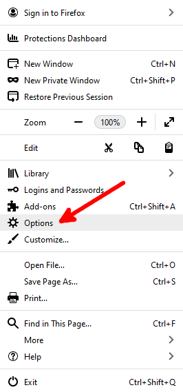
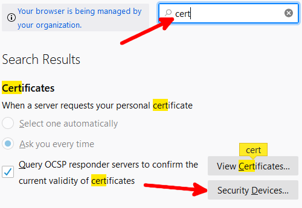
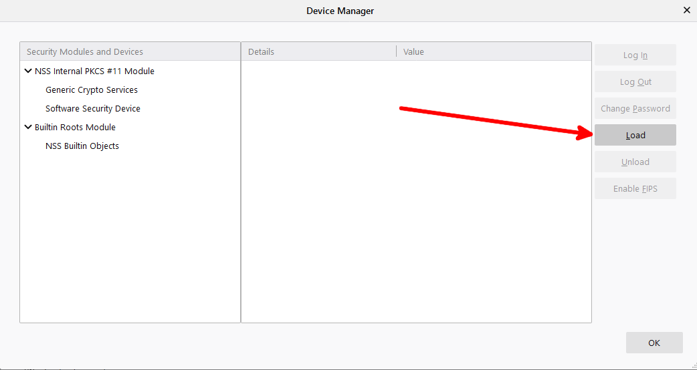
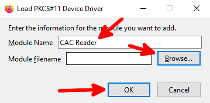

Open Firefox and click the triple line icon at the top right of the screen
Select options

Search for "cert", then click "Security Devices"

Click "Load", add a title like "CAC Reader", then browse to the CAC reader driver


Browse to and load the following CAC reader driver:
C:\Program Files (x86)\HID Global\ActivClient\acpkcs211.dll
click "OK". Now when you try to go to a military website, Firefox will prompt you for a certificate.